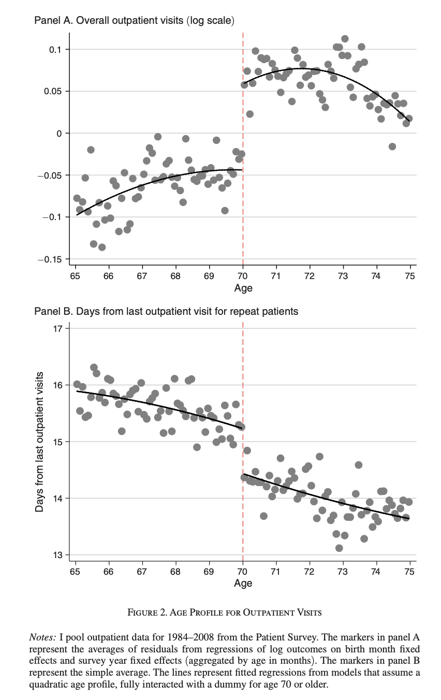
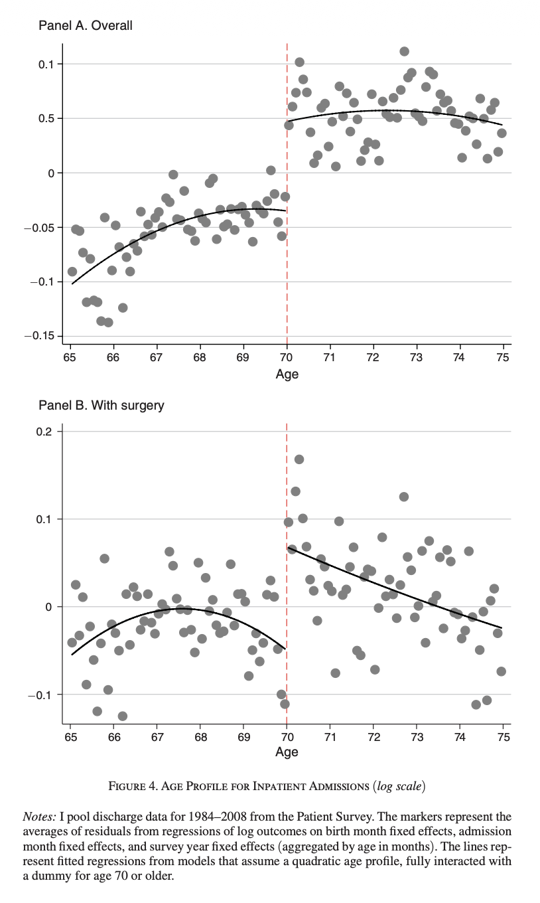
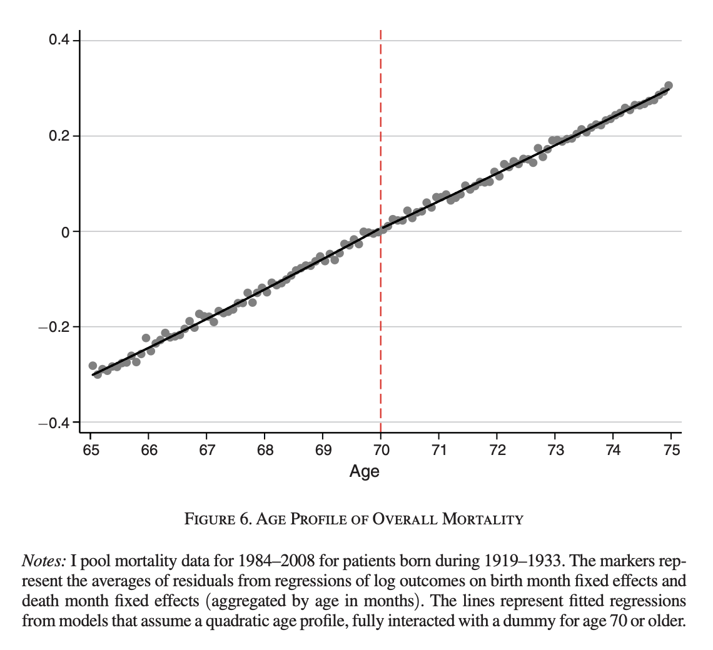

- RDD は、制度が作るカットオフの不連続を使って因果効果を識別する方法である。
- 識別の核心は、カットオフ近傍では他の要因が滑らかに変化する と考えられることである。
- sharp RDD と fuzzy RDD の違い、そして実装上の注意点を分けて理解することが大事である。
- RDD で推定される効果も基本的には local な効果であり、とくに fuzzy RDD は Lecture 10 の LATE として読める。
今回はまず、素朴な回帰では自己負担の因果効果が見えないことを確認し、その後で制度のカットオフを使う RDD の発想に入る。後半では sharp / fuzzy RDD の違い、Lecture 10 で導入した LATE との関係、実装上の注意点、そして実証研究での読み方を整理する。
- まず、素朴な相関ではなぜ因果効果が分からないのかを確認する。
- 次に、sharp RDD と fuzzy RDD の図から識別対象を読み、潜在結果変数による定義と推定方法へ進む。
- 最後に、RDD における local の意味、実装上の注意点、Shigeoka (2014) を中心とした実証研究の読み方を確認する。
導入：素朴な回帰ではなぜだめか
前回、操作変数法について学んだ。操作変数法は強力だが、いかんせん強い操作変数を見つけるのが難しいというのが欠点である。
逆に言えば、「強い IV」さえ見つけられれば大体の経済学者を黙らせる分析が可能になる。
今回紹介する不連続回帰デザイン、Regression Discontinuity Design (RDD)は、「強い IV」を見つけて利用する系統的な方法論として理解して良い。
RDD の発想をつかむために、まずは政策担当者の立場で考えてみよう。
高齢者の医療費自己負担をどのように設計すべきかを考えている官僚がいるとする。
自己負担を下げれば受診は増えるだろうが、それが本当に必要な医療へのアクセス改善につながるのか、それとも単に医療費を膨らませるだけなのかは重要な問題である。
制度設計のためには、まず「自己負担が下がると人々はどれだけ医療を利用するようになるのか」を知りたい。
これが厚生労働省の官僚たる君の今回の仕事である。
そこで最初にやりたくなるのは、個人ごとの自己負担額と外来受診回数を集めて、散布図を書いたり単純な回帰をしたりすることである。
やってみる。
set.seed(1234)
n <- 3000
# 観測されない健康状態（大きいほど健康が悪い）
health_bad <- rnorm(n)
# 真の自己負担額
copay <- 25 + 10 * health_bad + rnorm(n, sd = 8)
# 真の構造：自己負担が高いほど受診回数は減る
# ただし健康が悪い人ほど受診回数は多い
visits <- 8 - 0.15 * copay + 2.2 * health_bad + rnorm(n, sd = 1.8)
df_naive <- data.frame(
copay = copay,
visits = visits
)
plot(df_naive$copay, df_naive$visits,
pch = 16, cex = 0.5,
xlab = "Copayment",
ylab = "Outpatient visits",
main = "Naive Scatterplot of Copayment and Outpatient Visits")
abline(lm(visits ~ copay, data = df_naive), lwd = 2)
summary(lm(visits ~ copay, data = df_naive))
Call:
lm(formula = visits ~ copay, data = df_naive)
Residuals:
Min 1Q Median 3Q Max
-8.742 -1.483 0.009 1.515 7.985
Coefficients:
Estimate Std. Error t value Pr(>|t|)
(Intercept) 4.716457 0.091092 51.777 < 2e-16 ***
copay -0.016757 0.003241 -5.171 2.48e-07 ***
---
Signif. codes: 0 '***' 0.001 '**' 0.01 '*' 0.05 '.' 0.1 ' ' 1
Residual standard error: 2.264 on 2998 degrees of freedom
Multiple R-squared: 0.00884, Adjusted R-squared: 0.008509
F-statistic: 26.74 on 1 and 2998 DF, p-value: 2.483e-07
しかし、この素朴な方法はうまくいかない。
なぜなら、
- もともと病気が重い人ほど病院に多く通うし、
- 支払う医療費も多くなりやすいからである。
つまりデータの中で見えている相関は、「価格が高いと受診しない」という因果効果ではなく、「具合の悪い人ほどたくさん受診し、たくさん支払う」という健康状態の違いを反映しているかもしれない。
ということで、上記の散布図や回帰結果は、自己負担の因果効果をそのまま教えてはくれない。
問題を整理すると以下のような感じ。
数式で書けば、官僚が見たいのは本当は
\[
\text{visits}_i = \alpha + \beta\, \text{copay}_i + u_i
\]
における \(\beta\) である。
ここで \(\text{visits}_i\) は外来受診回数、\(\text{copay}_i\) は自己負担額である。政策担当者が知りたいのは、自己負担が外生的に変化したときに受診回数がどう動くか、すなわち \(\beta\) の因果的な意味である。
ところが実際には、観測されない健康状態 \(h_i\) が存在して、
\[
\text{visits}_i = \alpha + \beta\, \text{copay}_i + \gamma h_i + \varepsilon_i
\]
のようになっていると考えるのが自然である。ここで、単純な回帰 \(\text{visits}_i = \alpha + \beta\, \text{copay}_i + u_i\) の誤差項は、実際には \(u_i=\gamma h_i+\varepsilon_i\) を含んでいる。 さらに、健康状態の悪い人ほど多く医療を利用するので、自己負担額とも相関しやすい。すると
\[
\operatorname{Cov}(\text{copay}_i,u_i) \neq 0
\]
となり、単純な散布図や OLS では \(\beta\) をきれいに識別できない。
RDD では、cutoff のすぐ左とすぐ右の人たちを比べる。したがって、まず treatment のジャンプと outcome のジャンプの両方を見る、という順番が大事である。
制度を使う
この問題はただのエクササイズではなく、実際の制度設計でも重要な問題である。
Shigeoka (2014) はこの問題を正面から扱った論文であり、その識別戦略は今回注目するRDDである。
Shigeoka (2014) の研究が利用しているのは、
日本では当時、70歳になると医療費の自己負担が大きく下がるというルール
である。
70歳未満の人と70歳以上の人では患者負担が制度上大きく異なっており、この カットオフ が非常に強い価格変化を生んでいる。
この制度の重要な点は、年齢そのものは連続的に変化するのに、自己負担だけが70歳で不連続に変わることである。
69歳11か月の人と70歳0か月の人は、本来きわめてよく似た人たちだと考えられる。健康状態も、所得も、生活環境も、年齢に対して通常は滑らかに変わるはずである。ところが制度上の価格だけは、70歳を境にジャンプする。もし受診回数もその地点でジャンプしていれば、その差を自己負担の因果効果として解釈できるのではないか、というのが RDD の基本アイデアである。
この発想をシミュレーションで見てみよう。ここでは 70歳未満では自己負担が高く、70歳以上では自己負担が低くなるような制度を人工的に作る。
set.seed(5678)
n <- 4000
age <- runif(n, min = 68, max = 72)
post70 <- ifelse(age >= 70, 1, 0)
# 健康状態は年齢に対して滑らかに変化
health_bad <- 0.4 * (age - 70) + rnorm(n)
# 70歳で自己負担が不連続に低下
copay <- 30 - 12 * post70 + 4 * health_bad + rnorm(n, sd = 2)
# 自己負担が下がると受診回数が増える
visits <- 6 - 0.25 * copay + 1.5 * health_bad + 0.3 * (age - 70) + rnorm(n, sd = 1.5)
df_rdd <- data.frame(
age = age,
copay = copay,
visits = visits
)
まず、70歳で本当に自己負担が jump していることを確認する。
plot(df_rdd$age, df_rdd$copay,
pch = 16, cex = 0.4,
xlab = "Age",
ylab = "Copayment",
main = "Copayment Drops Discontinuously at Age 70")
abline(v = 70, lty = 2, lwd = 2)
fit_left <- lm(copay ~ age, data = subset(df_rdd, age < 70))
fit_right <- lm(copay ~ age, data = subset(df_rdd, age >= 70))
xx_left <- seq(68, 70, length.out = 100)
xx_right <- seq(70, 72, length.out = 100)
lines(xx_left, predict(fit_left, newdata = data.frame(age = xx_left)), lwd = 2)
lines(xx_right, predict(fit_right, newdata = data.frame(age = xx_right)), lwd = 2)
次に、外来受診回数も 70歳で jump しているかを見る。
plot(df_rdd$age, df_rdd$visits,
pch = 16, cex = 0.4,
xlab = "Age",
ylab = "Outpatient visits",
main = "Is There a Discontinuity in Outpatient Visits at Age 70?")
abline(v = 70, lty = 2, lwd = 2)
fit_left_y <- lm(visits ~ age, data = subset(df_rdd, age < 70))
fit_right_y <- lm(visits ~ age, data = subset(df_rdd, age >= 70))
lines(xx_left, predict(fit_left_y, newdata = data.frame(age = xx_left)), lwd = 2)
lines(xx_right, predict(fit_right_y, newdata = data.frame(age = xx_right)), lwd = 2)
ここで見ているのは、70歳の直前と直後で 結果 にどれだけ大きな ジャンプ があるかである。
年齢の効果そのものは滑らかだと考え、制度によって価格だけが不連続に変化するなら、その不連続を利用して価格の因果効果を識別できる。これが RDD の考え方である。
前回の IV の話とのつながりで言えば、RDD は「制度の cutoff に埋め込まれた非常に強い外生 variation を使う方法」である。
普通の IV では、操作変数が本当に強いか、外生的か、という点がいつも問題になる。これに対して RDD では、制度それ自体が強い不連続を作ってくれている。だから RDD はしばしば非常に説得力のある実証デザインになる。
もちろん、カットオフがあるだけで何でも識別できるわけではない。 本当に重要なのは、カットオフの直前直後で人々が十分に似ているか、そして 制度以外の要因がその点で不連続に変化していないか である。
以下では、この考え方をより フォーマルに定義する。 まずは
- running variable
- cutoff
- treatment の不連続
- outcome の不連続
という概念を導入し、RDD がどのように因果効果を識別するのかを説明する。
ここでは running variable、cutoff、sharp RDD、fuzzy RDD という基本用語をそろえる。直感だけでなく、どの極限を比較しているのか を意識して読むと理解しやすい。
RDD：図から識別と推定へ
RDD では、各個人 \(i\) に対して、連続的な変数 \(X_i\) が観測されているとする。
これを ランニング変数 と呼ぶ。先ほどの例では年齢がこれにあたる。
また、ある閾値 \(c\) が存在し、この値を境に制度上の扱いが変わるとする。
この \(c\) を カットオフ と呼ぶ。
以下では、まず図のどこを処置効果として読みたいのかを確認し、その読み方が正当化される条件を潜在結果変数で整理する。その後で、図から見えた対象を実際にどう推定するかを考える。
シャープRDD
シャープRDDでは、処置はランニング変数がカットオフを超えたかどうかだけで機械的に決まる。
つまり、
\[
D_i = 1\{X_i \ge c\}
\]
である。ここで \(D_i\) は処置ダミーであり、\(1\{\cdot\}\) は条件が成り立つとき1、そうでないとき0をとる指示関数である。
たとえば、
- \(X_i\) = 年齢
- \(c = 70\)
- \(D_i\) = 70歳以上で低い自己負担率が適用されるかどうか
というのが先ほどの例である。
1. 図で識別対象を見る
ここで、シャープRDDを簡単なデータで先に確認しておく。 ランニング変数 \(X_i\) が一様分布に従い、カットオフは \(c=0\) とする。 \(X_i \ge 0\) なら必ず処置を受けるので、
\[
D_i = 1\{X_i \ge 0\}
\]
である。 また、処置を受けないときの結果は \(X_i\) に沿って滑らかに変化し、処置を受けると結果が \(1.5\) だけ上がるように作る。
set.seed(123)
n <- 2000
x <- runif(n, min = -1, max = 1)
d <- ifelse(x >= 0, 1, 0)
u <- rnorm(n, mean = 0, sd = 0.5)
y0 <- 2 + 0.8 * x + u
y1 <- y0 + 1.5
y <- d * y1 + (1 - d) * y0
df_sharp <- data.frame(
x = x,
d = d,
y = y
)
head(df_sharp)
x d y
1 -0.4248450 0 1.162225
2 0.5766103 1 3.441311
3 -0.1820462 0 1.845373
4 0.7660348 1 4.046740
5 0.8809346 1 2.930076
6 -0.9088870 0 1.793177
まず、ランニング変数と処置の関係を描いてみる。 シャープRDDでは、cutoff で処置が完全に切り替わる。
plot(df_sharp$x, df_sharp$d,
pch = 16, cex = 0.4,
xlab = "Running variable",
ylab = "Treatment status",
main = "Sharp RDD: Treatment Assignment")
abline(v = 0, lty = 2, lwd = 2)
次に、横軸をランニング変数、縦軸を結果変数として散布図を描く。左右の線を cutoff まで延ばしたときの縦の差に注目してほしい。
fit_left_graph <- lm(y ~ x, data = subset(df_sharp, x < 0))
fit_right_graph <- lm(y ~ x, data = subset(df_sharp, x >= 0))
xx_left <- seq(-1, 0, length.out = 100)
xx_right <- seq(0, 1, length.out = 100)
y_left_c <- predict(fit_left_graph, newdata = data.frame(x = 0))
y_right_c <- predict(fit_right_graph, newdata = data.frame(x = 0))
plot(df_sharp$x, df_sharp$y,
pch = 16, cex = 0.4,
xlab = "Running variable",
ylab = "Outcome",
main = "Sharp RDD: Outcome Jump")
abline(v = 0, lty = 2, lwd = 2)
lines(xx_left,
predict(fit_left_graph, newdata = data.frame(x = xx_left)),
lwd = 2)
lines(xx_right,
predict(fit_right_graph, newdata = data.frame(x = xx_right)),
lwd = 2)
arrows(0, y_left_c, 0, y_right_c,
code = 3, angle = 90, length = 0.08, lwd = 2)
text(0.04, mean(c(y_left_c, y_right_c)),
"Outcome jump", pos = 4)
図で読んでいるのは、左側全体の平均と右側全体の平均の差ではない。左右から cutoff へ近づいたときの予測値の差である。記号で書けば、シャープRDDの識別対象は
\[
\boxed{
\tau_{\mathrm{SRDD}}
=
\underbrace{\lim_{x\downarrow c}E[Y_i\mid X_i=x]}_{\text{right-hand limit}}
-
\underbrace{\lim_{x\uparrow c}E[Y_i\mid X_i=x]}_{\text{left-hand limit}}
}
\]
である。この時点では、\(\tau_{\mathrm{SRDD}}\) は観測される結果変数のジャンプとして定義しただけである。次に、このジャンプをなぜ因果効果と読めるのかを考える。
2. 潜在結果変数と連続性の仮定
因果効果を考えるために、各個人について潜在結果変数を導入する。
\(Y_i(1)\) を処置を受けたときの潜在結果変数、\(Y_i(0)\) を処置を受けなかったときの潜在結果変数とする。
観察される結果変数は
\[
Y_i = D_i Y_i(1) + (1-D_i) Y_i(0)
\]
である。
図の左側では \(D_i=0\) なので \(Y_i(0)\) が観察され、右側では \(D_i=1\) なので \(Y_i(1)\) が観察される。それでも左右の差を因果効果と読むには、「処置が切り替わらなければ、結果は cutoff で突然変わらなかった」と考えられる必要がある。これが 連続性の仮定 である。
左の図では、破線で示した「処置がない場合の結果」が cutoff で滑らかにつながっている。このとき、実線に現れたジャンプを処置によって生じた差と解釈できる。右の図では、処置がなくても結果にジャンプがあるため、観察されたジャンプには処置以外の変化が混ざる。
x_grid <- seq(-1, 1, length.out = 300)
treat_effect <- 1.2
y0_smooth <- 2 + 0.7 * x_grid + 0.25 * x_grid^2
y_obs_valid <- ifelse(x_grid < 0, y0_smooth, y0_smooth + treat_effect)
y0_jump <- y0_smooth + ifelse(x_grid >= 0, 0.8, 0)
y_obs_invalid <- ifelse(x_grid < 0, y0_jump, y0_jump + treat_effect)
old_par <- par(mfrow = c(1, 2),
mar = c(3.5, 4.2, 3.2, 1.8),
oma = c(2.5, 0, 0, 0),
cex.axis = 0.8)
plot(x_grid, y_obs_valid,
type = "l", lwd = 2, ylim = c(1.1, 5.2),
xlab = "",
ylab = "Outcome",
main = "Continuity Holds")
lines(x_grid, y0_smooth, lwd = 2, lty = 2)
abline(v = 0, lty = 3, lwd = 2)
text(0.86, 3.55, "Observed", pos = 2, cex = 0.75)
text(0.86, 2.35, "No treatment", pos = 2, cex = 0.75)
plot(x_grid, y_obs_invalid,
type = "l", lwd = 2, ylim = c(1.1, 5.2),
xlab = "",
ylab = "Outcome",
main = "Continuity Fails")
lines(x_grid, y0_jump, lwd = 2, lty = 2)
abline(v = 0, lty = 3, lwd = 2)
text(0.86, 4.45, "Observed", pos = 2, cex = 0.75)
text(0.86, 3.15, "No treatment", pos = 2, cex = 0.75)
mtext("Running variable", side = 1, outer = TRUE, line = 0.8)
フォーマルには、\(d=0,1\) のそれぞれについて
\[
\lim_{x\downarrow c}E[Y_i(d)\mid X_i=x]
=
\lim_{x\uparrow c}E[Y_i(d)\mid X_i=x]
\]
を仮定する。シャープRDDでは
\[
E[Y_i\mid X_i=x]
=
\begin{cases}
E[Y_i(0)\mid X_i=x] & (x<c),\\
E[Y_i(1)\mid X_i=x] & (x\ge c),
\end{cases}
\]
なので、連続性の仮定のもとで
\[
\boxed{
\tau_{\mathrm{SRDD}}
=E[Y_i(1)-Y_i(0)\mid X_i=c]
}
\]
となる。つまり、図で定義した結果変数のジャンプは、cutoff にいる人々にとっての平均処置効果として識別される。
シャープRDDが識別するのは母集団全体の平均効果ではなく、\(X_i=c\) における効果である。70歳を cutoff とするなら70歳近傍の人々への効果であり、40歳や90歳への効果まで同じとは限らない。
連続性は、「cutoff の左右の人が完全に同じ」という仮定ではない。健康状態や所得が年齢とともに変わっていても、それらが cutoff で突然ジャンプしなければよい。逆に、cutoff で別の制度も同時に変わるなら、結果のジャンプを一つの処置だけに帰属できない。
3. 愚直に推定する：左右で別々に回帰する
図の定義をそのまま推定に移そう。cutoff の左側と右側で別々に直線を当てはめ、それぞれの線が \(X_i=c\) で予測する値を計算すればよい。
cutoff を中心化した変数を \(\widetilde X_i=X_i-c\) とし、cutoff から距離 \(h\) 以内の観測だけを使う。左側と右側で
\[
\begin{aligned}
Y_i&=\alpha_-+\beta_-\widetilde X_i+u_i
&&(-h\le \widetilde X_i<0),\\
Y_i&=\alpha_++\beta_+\widetilde X_i+u_i
&&(0\le \widetilde X_i\le h)
\end{aligned}
\]
を別々に推定する。\(\widetilde X_i=0\) を代入すると予測値はそれぞれ \(\widehat\alpha_-\) と \(\widehat\alpha_+\) なので、自然な推定量は
\[
\widehat\tau_{\mathrm{SRDD}}
=\widehat\alpha_+-\widehat\alpha_-
\]
である。
h_sharp <- 0.3
df_sharp_local <- subset(df_sharp, abs(x) <= h_sharp)
fit_sharp_left <- lm(y ~ x, data = subset(df_sharp_local, x < 0))
fit_sharp_right <- lm(y ~ x, data = subset(df_sharp_local, x >= 0))
pred_sharp_left <- predict(fit_sharp_left, newdata = data.frame(x = 0))
pred_sharp_right <- predict(fit_sharp_right, newdata = data.frame(x = 0))
tau_sharp_manual <- pred_sharp_right - pred_sharp_left
pred_sharp_left
この推定法から、なぜ バンド幅 \(h\) を選ぶ必要があるのかも分かる。遠くのデータまで使えば直線の推定は安定するが、遠く離れた点まで同じ直線で近似することになる。cutoff のすぐ近くだけを使えば近似はもっともらしくなるが、観測数が減って推定は不精確になる。
| 小さい \(h\) |
cutoff 近傍の形を捉えやすい |
標準誤差が大きくなりやすい |
| 大きい \(h\) |
多くの観測を使えて推定が安定する |
遠い観測による近似のずれが生じやすい |
したがって、バンド幅は単なる作図上の選択ではなく、どの観測を使って \(\alpha_-\) と \(\alpha_+\) を推定するかを決める推定上の選択である。
4. 一つの回帰式で推定する
左右を別々に回帰して予測値を引き算する方法は、点推定の発想を理解するには分かりやすい。ただし、その差の標準誤差や信頼区間を自分で組み立てるのは手間がかかる。同じ二本の直線を一つの回帰式にまとめれば、ジャンプが一つの係数として直接推定される。
\(Z_i=1\{X_i\ge c\}\) とおくと、回帰式は
\[
Y_i
=
\alpha
+
\tau Z_i
+
\beta_1 (X_i-c)
+
\beta_2 Z_i (X_i-c)
+
u_i
\]
という回帰で表現できる。
この式では、cutoff 左側の予測値が \(\alpha\)、右側の予測値が \(\alpha+\tau\) なので、\(Z_i\) の係数 \(\tau\) がそのまま cutoff における予測値の差になる。\(\beta_2\) を入れているので、左右の傾きは同じでなくてもよい。
fit_sharp_single <- lm(y ~ d + x + d:x, data = df_sharp_local)
summary(fit_sharp_single)
Call:
lm(formula = y ~ d + x + d:x, data = df_sharp_local)
Residuals:
Min 1Q Median 3Q Max
-1.28966 -0.31846 -0.01704 0.31496 1.67365
Coefficients:
Estimate Std. Error t value Pr(>|t|)
(Intercept) 2.06300 0.05336 38.661 < 2e-16 ***
d 1.42120 0.07729 18.387 < 2e-16 ***
x 1.11954 0.31125 3.597 0.000347 ***
d:x -0.16755 0.44711 -0.375 0.707980
---
Signif. codes: 0 '***' 0.001 '**' 0.01 '*' 0.05 '.' 0.1 ' ' 1
Residual standard error: 0.4762 on 628 degrees of freedom
Multiple R-squared: 0.7709, Adjusted R-squared: 0.7698
F-statistic: 704.4 on 3 and 628 DF, p-value: < 2.2e-16
coef(fit_sharp_single)["d"]
同じ標本、同じ重み、同じ直線を使っているため、d の係数と先ほどの予測値の差は一致する。回帰を一つにまとめる利点は、推定対象を変えることではなく、\(\tau_{\mathrm{SRDD}}\) の標準誤差と検定を一つの係数について行えることである。
ただし、ここで summary() が示す通常の標準誤差だけでRDD固有の推論上の問題がすべて解決するわけではない。一つの回帰にまとめると係数間の共分散を回帰に任せられる、というのがこの段階でのポイントである。実証では、不均一分散に頑健な標準誤差に加え、バンド幅の選択とcutoff近傍の近似のずれを考慮した推論を行う。
ファジーRDD
ここまでは、カットオフをまたぐと処置が完全に切り替わるシャープRDDを見た。
しかし現実には、制度上はカットオフがあっても、人々が必ずしもそのルールどおりに処置を受けるとは限らない。
たとえば、
- 70歳を超えると自己負担率は下がるはずだが、実際の負担額には多少のばらつきがある
- テストの点数が基準を超えたら補習の対象から外れるはずだが、実際には裁量で例外がある
- 所得基準を超えたら給付金が減るはずだが、事務処理や申請の有無で完全には一致しない
ということがある。
このように、カットオフで処置の確率は不連続に変化するが、処置が完全には決まらない状況を ファジーRDD という。
シャープRDDでは
\[
D_i = 1\{X_i \ge c\}
\]
だったが、ファジーRDDではこれは成り立たない。
代わりに
\[
P(D_i=1\mid X_i=x)
\]
が \(x=c\) で不連続になることを利用する。
すなわち、
\[
\lim_{x \downarrow c} E[D_i\mid X_i=x]
-
\lim_{x \uparrow c} E[D_i\mid X_i=x]
\neq 0
\]
であることが重要である。
1. 二つの図からWald比を読む
ここで先に、ファジーRDDをシミュレーションで確認する。 cutoff を超えると処置を受ける確率は大きく上がるが、処置が完全には決まらない状況を作る。
set.seed(456)
n <- 3000
x <- runif(n, min = -1, max = 1)
z <- ifelse(x >= 0, 1, 0)
# 処置確率は cutoff で不連続に上がる
p_d0 <- 0.2 + 0.1 * (x + 1)
p_d1 <- 0.7 + 0.1 * x
p_d0 <- pmin(pmax(p_d0, 0.01), 0.99)
p_d1 <- pmin(pmax(p_d1, 0.01), 0.99)
# A common latent draw ensures d1 >= d0 for every individual.
u_d <- runif(n)
d0 <- ifelse(u_d <= p_d0, 1, 0)
d1 <- ifelse(u_d <= p_d1, 1, 0)
d <- ifelse(z == 1, d1, d0)
u <- rnorm(n, mean = 0, sd = 0.5)
y0 <- 1 + 0.5 * x + u
y1 <- y0 + 2
y <- d * y1 + (1 - d) * y0
df_fuzzy <- data.frame(
x = x,
z = z,
d = d,
d0 = d0,
d1 = d1,
y = y,
p_d0 = p_d0,
p_d1 = p_d1
)
head(df_fuzzy)
x z d d0 d1 y p_d0 p_d1
1 -0.8208968 0 1 1 1 2.6174627 0.2179103 0.6179103
2 -0.5789754 0 0 0 1 0.7865857 0.2421025 0.6421025
3 0.4659105 1 0 0 0 1.0704556 0.3465911 0.7465911
4 0.7042671 1 0 0 0 1.0910863 0.3704267 0.7704267
5 0.5767958 1 1 0 1 3.4204633 0.3576796 0.7576796
6 -0.3360801 0 1 1 1 2.8050766 0.2663920 0.6663920
all(df_fuzzy$d1 >= df_fuzzy$d0)
まず、cutoff で処置確率が不連続に変化していることを図で確認する。 個票のままだと見にくいので、区間ごとの平均を描く。
breaks <- seq(-1, 1, by = 0.05)
bin_id <- cut(df_fuzzy$x, breaks = breaks, include.lowest = TRUE)
bin_mean_x <- tapply(df_fuzzy$x, bin_id, mean)
bin_mean_d <- tapply(df_fuzzy$d, bin_id, mean)
fit_d_left_graph <- lm(d ~ x, data = subset(df_fuzzy, x < 0))
fit_d_right_graph <- lm(d ~ x, data = subset(df_fuzzy, x >= 0))
xx_left <- seq(-1, 0, length.out = 100)
xx_right <- seq(0, 1, length.out = 100)
plot(bin_mean_x, bin_mean_d,
pch = 16,
xlab = "Running variable",
ylab = "Treatment rate",
main = "Fuzzy RDD First Stage: Treatment Jump")
abline(v = 0, lty = 2, lwd = 2)
lines(xx_left,
predict(fit_d_left_graph, newdata = data.frame(x = xx_left)),
lwd = 2)
lines(xx_right,
predict(fit_d_right_graph, newdata = data.frame(x = xx_right)),
lwd = 2)
arrows(0,
predict(fit_d_left_graph, newdata = data.frame(x = 0)),
0,
predict(fit_d_right_graph, newdata = data.frame(x = 0)),
code = 3, angle = 90, length = 0.08, lwd = 2)
次に、結果変数にも cutoff で不連続があるかを見る。
bin_mean_y <- tapply(df_fuzzy$y, bin_id, mean)
fit_y_left_graph <- lm(y ~ x, data = subset(df_fuzzy, x < 0))
fit_y_right_graph <- lm(y ~ x, data = subset(df_fuzzy, x >= 0))
plot(bin_mean_x, bin_mean_y,
pch = 16,
xlab = "Running variable",
ylab = "Average outcome",
main = "Fuzzy RDD Reduced Form: Outcome Jump")
abline(v = 0, lty = 2, lwd = 2)
lines(xx_left,
predict(fit_y_left_graph, newdata = data.frame(x = xx_left)),
lwd = 2)
lines(xx_right,
predict(fit_y_right_graph, newdata = data.frame(x = xx_right)),
lwd = 2)
arrows(0,
predict(fit_y_left_graph, newdata = data.frame(x = 0)),
0,
predict(fit_y_right_graph, newdata = data.frame(x = 0)),
code = 3, angle = 90, length = 0.08, lwd = 2)
処置率は cutoff でジャンプしているが、0から1へ完全には切り替わっていない。一方、結果にもジャンプがある。しかし、結果のジャンプをそのまま一人あたりの処置効果とは読めない。cutoff を超えたことで処置を受ける人が一部だけ増え、その人々の効果が平均に現れたものだからである。
結果のジャンプを \(\Delta_Y\)、処置率のジャンプを \(\Delta_D\) と書く。
\[
\begin{aligned}
\Delta_Y
&=\lim_{x\downarrow c}E[Y_i\mid X_i=x]
-\lim_{x\uparrow c}E[Y_i\mid X_i=x],\\
\Delta_D
&=\lim_{x\downarrow c}E[D_i\mid X_i=x]
-\lim_{x\uparrow c}E[D_i\mid X_i=x].
\end{aligned}
\]
たとえば、処置率が \(0.5\) 上がったときに平均的な結果が \(1.0\) 上がったなら、cutoff によって新たに処置を受けた人一人あたりの効果は \(1.0/0.5=2.0\) と考えるのが自然である。したがって、二つの図から導かれるファジーRDDの識別対象は
\[
\boxed{
\tau_{\mathrm{FRDD}}
=\frac{\Delta_Y}{\Delta_D}
}
\]
となる。これはLecture 10で学んだWald比と同じ形である。
2. 潜在結果変数によるフォーマルな定義
\(Z_i=1\{X_i\ge c\}\) を、cutoff 右側の制度が適用されることを表す変数とする。各個人について
- \(D_i(1)\)：右側の制度が適用されたときの処置状態
- \(D_i(0)\)：左側の制度が適用されたときの処置状態
を考える。観察される処置は \(D_i=D_i(Z_i)\) である。結果については先ほどと同じ \(Y_i(1),Y_i(0)\) を使い、制度の適用は処置を通じて結果に影響すると考える。このとき
\[
Y_i=Y_i(D_i(Z_i))
\]
である。
識別には、次の条件が必要になる。
- 連続性：左右それぞれの制度のもとで実現する潜在結果と潜在処置の平均は、cutoff のところで滑らかにつながる。
- First stage：\(\Delta_D\ne0\)、すなわち制度の適用が処置率を実際に変える。
- 排除制約：cutoff を超えることは、処置を通じてのみ結果に不連続な影響を与える。
- 単調性：\(D_i(1)\ge D_i(0)\)。右側の制度によって、かえって処置をやめる人はいない。上のシミュレーションでも、
d0 と d1 に同じ潜在的な乱数を使うことでこの関係を満たしている。
連続性をフォーマルに書けば、\(z=0,1\) のそれぞれについて
\[
\begin{aligned}
\lim_{x\downarrow c}E[Y_i(D_i(z))\mid X_i=x]
&=\lim_{x\uparrow c}E[Y_i(D_i(z))\mid X_i=x],\\
\lim_{x\downarrow c}E[D_i(z)\mid X_i=x]
&=\lim_{x\uparrow c}E[D_i(z)\mid X_i=x]
\end{aligned}
\]
を仮定することになる。第一式が reduced form の反実仮想、第二式が first stage の反実仮想について、制度が切り替わらなければ cutoff でジャンプしないことを表す。
連続性の意味はシャープRDDで見た図と同じである。cutoff がなければ潜在結果も処置の選び方も滑らかに変化したはずだから、cutoff に現れるジャンプを制度の適用による変化として読む。
これらの仮定のもとで、Wald比は
\[
\boxed{
\tau_{\mathrm{FRDD}}
=E\!\left[
Y_i(1)-Y_i(0)
\mid D_i(1)>D_i(0),\ X_i=c
\right]
}
\]
を識別する。つまり、cutoff 近傍にいて、制度の適用によって実際に処置状態が変わる complier に対する平均処置効果である。
対象は、第一に \(X_i=c\) にいる人々に限られ、第二にその中でも \(D_i(1)>D_i(0)\) となるcomplierに限られる。したがってファジーRDDの識別対象は、cutoff におけるLATEである。
3. 愚直に推定する：二つのジャンプの比をとる
図の定義どおりに推定するなら、同じバンド幅の中で、結果 \(Y_i\) と処置 \(D_i\) のそれぞれについて左右別々の回帰を行えばよい。合計4本の回帰から
\[
\widehat\Delta_Y
=\widehat\alpha_{Y,+}-\widehat\alpha_{Y,-},
\qquad
\widehat\Delta_D
=\widehat\alpha_{D,+}-\widehat\alpha_{D,-}
\]
を計算し、
\[
\widehat\tau_{\mathrm{FRDD}}
=\frac{\widehat\Delta_Y}{\widehat\Delta_D}
\]
とする。
h_fuzzy <- 0.3
df_fuzzy_local <- subset(df_fuzzy, abs(x) <= h_fuzzy)
fit_y_left <- lm(y ~ x, data = subset(df_fuzzy_local, x < 0))
fit_y_right <- lm(y ~ x, data = subset(df_fuzzy_local, x >= 0))
fit_d_left <- lm(d ~ x, data = subset(df_fuzzy_local, x < 0))
fit_d_right <- lm(d ~ x, data = subset(df_fuzzy_local, x >= 0))
jump_y <-
predict(fit_y_right, newdata = data.frame(x = 0)) -
predict(fit_y_left, newdata = data.frame(x = 0))
jump_d <-
predict(fit_d_right, newdata = data.frame(x = 0)) -
predict(fit_d_left, newdata = data.frame(x = 0))
wald_fuzzy <- jump_y / jump_d
jump_y
このシミュレーションでは真の処置効果を \(2\) に設定しているので、Wald比もおおむね \(2\) に近くなる。分子と分母には同じバンド幅、同じ重み、同じ形の回帰を使うことが重要である。
4. Wald比をIV・2SLSとして推定する
4本の回帰から点推定値を作ることはできる。しかし、\(\widehat\Delta_Y/\widehat\Delta_D\) という比の標準誤差には、分子と分母それぞれの不確実性と両者の共分散が関わるため、手計算で推論を行うのは面倒である。
ここでLecture 10の「Wald推定量はIV推定量である」という結果を使う。cutoff を超えたかどうか
\[
Z_i=1\{X_i\ge c\}
\]
を処置 \(D_i\) の操作変数とみなせば、ファジーRDDを2SLSとして一度に推定できる。
第一段階は
\[
D_i
=\pi_0+\pi_1Z_i
+\pi_2(X_i-c)
+\pi_3Z_i(X_i-c)
+v_i,
\]
第二段階は
\[
Y_i
=\alpha+\tau\widehat D_i
+\beta_1(X_i-c)
+\beta_2Z_i(X_i-c)
+u_i
\]
である。第一段階の \(\pi_1\) が処置率のジャンプ、\(Z_i\) が excluded instrument である。\(X_i-c\) と \(Z_i(X_i-c)\) を入れることで、cutoff の左右に別々の傾きを許している。
library(AER)
fit_iv <- ivreg(
y ~ d + x + z:x |
z + x + z:x,
data = df_fuzzy_local
)
summary(fit_iv)
Call:
ivreg(formula = y ~ d + x + z:x | z + x + z:x, data = df_fuzzy_local)
Residuals:
Min 1Q Median 3Q Max
-1.506465 -0.346748 -0.004782 0.343249 1.707608
Coefficients:
Estimate Std. Error t value Pr(>|t|)
(Intercept) 1.1473 0.1113 10.313 < 2e-16 ***
d 1.8338 0.1998 9.178 < 2e-16 ***
x 0.9790 0.3428 2.856 0.00439 **
x:z -0.4370 0.4079 -1.071 0.28423
---
Signif. codes: 0 '***' 0.001 '**' 0.01 '*' 0.05 '.' 0.1 ' ' 1
Residual standard error: 0.5017 on 903 degrees of freedom
Multiple R-Squared: 0.8075, Adjusted R-squared: 0.8069
Wald test: 293.1 on 3 and 903 DF, p-value: < 2.2e-16
同じ標本と回帰仕様を使っているため、2SLSの d の係数は先ほどのWald比と一致する。2SLSとして書く利点は、点推定値を変えることではなく、\(\tau_{\mathrm{FRDD}}\) の標準誤差・信頼区間・検定をIV推定の枠組みで扱えることである。
ここでも、summary(ivreg) の通常の標準誤差はWald比と2SLSの対応を示すための講義用出力である。実証での最終的な推論には、Sharp RDDと同様に、頑健な標準誤差と近似のずれを考慮する必要がある。
シャープRDDとファジーRDDの対応
| cutoff で変わるもの |
処置が0から1へ完全に切り替わる |
処置率が不連続に変わる |
| 図から読む量 |
結果のジャンプ \(\Delta_Y\) |
結果のジャンプ \(\Delta_Y\) と処置率のジャンプ \(\Delta_D\) |
| 識別対象 |
\(\tau_{\mathrm{SRDD}}=\Delta_Y\) |
\(\tau_{\mathrm{FRDD}}=\Delta_Y/\Delta_D\) |
| 愚直な推定 |
左右の予測値の差 |
二つの予測値の差の比 |
| 一式の推定 |
\(Z_i\) の係数 |
\(Z_i\) をIVとする2SLS |
| 因果効果の対象 |
cutoff にいる人々 |
cutoff にいるcomplier |
シャープRDDは、ファジーRDDで処置率のジャンプが \(\Delta_D=1\) になった特別な場合と考えることもできる。この対応を押さえると、両者の違いは「結果のジャンプをそのまま読むか、first stageのジャンプで割るか」に集約される。
どちらのRDDでも、cutoff 近傍に絞ること、遠い範囲まで複雑な曲線で無理に結ばないこと、処置以外の変数や観測密度に不自然なジャンプがないかを点検することが重要である。
RDD の実装上の注意
ここまでで、図から推定量を作る流れは確認した。実証ではさらに、選んだバンド幅や近似の仕方に結果が強く依存していないか、識別を支える前提がデータと矛盾していないかを点検する。
バンド幅を変えて確認する
バンド幅には、近似のずれと推定の不精確さのトレードオフがある。実際の分析では、一つの恣意的な値だけを選ぶのではなく、データに基づく基準で中心となるバンド幅を選び、その周辺のより狭い・より広いバンド幅でも結論が大きく変わらないかを示す。
ただし、結果が好ましく見えるバンド幅だけを後から選んではならない。どの範囲を使ったか、左右の観測数がいくつか、推定値と信頼区間がどう変わるかを併記することが大切である。
なぜ単純な高次多項式に頼りすぎてはいけないのか
RDD を初めて学ぶと、全標本を使って
\[
Y_i
=
\alpha
+
\tau D_i
+
\beta_1 X_i
+
\beta_2 X_i^2
+
\beta_3 X_i^3
+
\cdots
+
u_i
\]
のような高次多項式を入れればよいのではないか、と思うかもしれない。
しかし現在の実務では、このような全標本に対する高次多項式回帰に強く依存するやり方はあまり好まれない。
理由は単純で、高次多項式はカットオフから遠い領域の形に強く影響されやすく、カットオフ近傍での推定を不自然に歪めることがあるからである。
RDD が本当に知りたいのはカットオフ近傍の局所比較なので、全体の複雑な形を当てにいくよりも、近傍での単純な近似を重視したほうがよい。
したがって、講義レベルでは
RDD ではカットオフ近傍だけを使い、左右で別々に直線を引いて、その cutoff でのズレを読むのが標準的である
と理解しておけば十分である。
RDDで必ず確認すべきこと
RDD が説得力を持つためには、「カットオフで不連続なのは処置だけである」という解釈が成り立たなければならない。
そのため実証では、推定結果そのものだけでなく、その前提がもっともらしいかを確認する作業が非常に重要である。
共変量がカットオフで不連続でないか
まず確認すべきなのは、あらかじめ決まっている個人属性や共変量がカットオフで不連続になっていないかである。
たとえば、
- 性別
- 学歴
- 家族背景
- 過去の健康状態
- 前年度の成績
など、処置の前に決まっている変数がカットオフで急に飛んでいるとしたら、左右の個人が「ほとんど同じ」とは言いにくくなる。
理想的には、これらの変数については
\[
\lim_{x \downarrow c} E[W_i\mid X_i=x]
=
\lim_{x \uparrow c} E[W_i\mid X_i=x]
\]
が成り立っていてほしい。
ここで \(W_i\) は事前に決まっている共変量である。
したがって実証では、主要な共変量についても RDD の図や回帰を行い、カットオフで不連続がないことを確認する。
ランニング変数の密度がカットオフで不連続でないか
次に重要なのが、ランニング変数そのものの分布がカットオフで不連続でないか、という点である。
もし人々がカットオフの左右を意図的に操作できるなら、カットオフ近傍の左右の個人はもはや「ほとんどランダムに分かれた集団」とは言えなくなる。
たとえば試験の点数を少し操作できる、申請基準の直前直後に合わせて行動を変えられる、というような場合には注意が必要である。
この問題は、ランニング変数の密度をカットオフ近傍で描くことである程度確認できる。
もしカットオフの片側に観測が不自然に集中していれば、操作や選別が起きている可能性がある。
古典的な例として、ケトレーがフランスの徴兵検査における身長分布から徴兵逃れを疑った話がある。 当時、身長 157cm 前後、あるいは 62 inches が徴兵対象の cutoff だったと説明されることが多く、記録された身長分布では cutoff を少し上回る人が少なく、cutoff を少し下回る人が多かった。 これは、「本当は cutoff の少し上にいる人の一部が、記録上は cutoff の少し下に移ったのではないか」と疑わせるパターンである。
set.seed(2026)
n <- 8000
true_height <- rnorm(n, mean = 162, sd = 6)
recorded_height <- true_height
near_cutoff <- which(true_height >= 157 & true_height < 160)
manipulated <- near_cutoff[runif(length(near_cutoff)) < 0.45]
recorded_height[manipulated] <- runif(length(manipulated), min = 155.3, max = 156.9)
hist(recorded_height,
breaks = seq(130, 195, by = 1),
xlim = c(145, 175),
ylim = c(0, 680),
col = "gray80",
border = "white",
main = "Recorded Height Around a Conscription Cutoff",
xlab = "Recorded height (cm)",
ylab = "Count")
height_grid <- seq(145, 175, length.out = 300)
expected_count <- dnorm(height_grid, mean = 162, sd = 6) * n
lines(height_grid, expected_count, lwd = 2, lty = 2)
abline(v = 157, lty = 2, lwd = 2)
text(157.4, 610, "Cutoff: 157 cm", pos = 4)
arrows(154.8, 560, 156.2, 430, length = 0.08)
text(154.3, 590, "Bunching below cutoff", pos = 2)
arrows(161.8, 470, 158.5, 330, length = 0.08)
text(162.2, 500, "Missing mass above cutoff", pos = 4)
text(173.8, 410, "Expected smooth density", pos = 2)
カットオフの左右に不自然な人の集まり方がないかを確認する。
プラセボ・カットオフ
さらに有用なのが、本当のカットオフ以外の場所でも不連続が出ていないか を見ることである。
もし 70 歳で制度が変わるはずなのに、68 歳や 72 歳でも同じような不連続が大量に見えるなら、その結果は本当に制度の効果なのか疑わしくなる。
このため、実証では本来のカットオフとは別の場所に偽のカットオフを置いて、同じような推定を行うことがある。
これを プラセボ・カットオフ の確認という。
本物の制度変更点でだけ不連続が見え、他の場所では見えないのであれば、RDD の解釈はより説得的になる。
RDDの推定結果をどう解釈するか
RDD が識別しているのは、一般に カットオフ近傍での局所的な効果 である。
これはとても重要な点である。
たとえば 70 歳をカットオフにした医療制度の RDD で識別されるのは、70 歳近傍にいる人々にとっての自己負担変化の効果である。
それが 40 歳や 90 歳の人にも同じように当てはまるとは限らない。
したがって RDD は非常に説得力のある因果効果を与える一方で、その効果は本質的に 局所的 である。
この local には、sharp RDD と fuzzy RDD で少し違う読み方がある。
| sharp RDD |
カットオフ \(X_i=c\) の近傍にいる人々 |
カットオフにおける平均処置効果 |
| fuzzy RDD |
カットオフ近傍にいて、かつカットオフをまたぐことで処置状態が変わる人々 |
カットオフ近傍の complier に対する LATE |
つまり、fuzzy RDD の local は Lecture 10 の LATE と直接つながっている。 カットオフをまたいだかどうかが処置確率を動かす IV になっており、その IV に反応して処置状態を変える人々の効果を見ているからである。
言い換えると、RDD の強みは「かなりきれいな比較ができる」ことにあるが、その代償として「わかるのはカットオフ近傍の効果に限られる」ことが多い。
RDDの限界
RDD は強力な方法だが、万能ではない。主な限界は次の通りである。
第一に、カットオフ近傍でしか識別できない。
したがって、外的妥当性には常に注意が必要である。
第二に、ランニング変数が操作可能だとデザインが壊れうる。
人々がカットオフの左右に自分をうまく配置できるなら、比較の信頼性は低下する。
第三に、推定は仕様に敏感になりうる。
バンド幅の選び方や近似の仕方によって結果が変わる可能性があるため、複数の仕様で頑健性を確認することが重要である。
第四に、カットオフ近傍のデータが少ないと、不精確な推定になりやすい。
局所比較を厳密にしようとするほど、標準誤差が大きくなることは避けにくい。
実証研究では、どの制度ルールが cutoff を作っているのか、その cutoff の前後で本当に人々が似ていると言えそうか、そしてどの範囲の local effect を読んでいるのか、という順に確認すると読みやすい。
RDD を使った実証研究
Shigeoka (2014) : The Effect of Patient Cost Sharing on Utilization, Health, and Risk Protection
ここでは、RDD を使った代表的な実証研究として Shigeoka (2014) を取り上げる。
この論文は、日本では 70 歳になると医療費の自己負担が大きく下がる、という制度上の不連続を利用して、自己負担の変化が
に与える因果効果を推定している。
この論文の魅力は、RDD の発想が非常に明確に表れている点にある。
年齢は連続的に変化するが、医療費自己負担は 70 歳のところで制度的に不連続に変わる。
したがって、70 歳の直前と直後を比較することで、自己負担の変化が医療行動や健康に与える影響を説得的に識別できる。
制度の設定
この論文が利用している制度的ショックは、70 歳到達時点での自己負担率の大幅な低下である。
したがって、この論文における
- ランニング変数は 年齢
- カットオフは 70 歳
- 処置は 低い自己負担率が適用されること
である。
この設定のもとで、論文は次の問いを考えている。
- 医療価格が下がると、人はどれだけ多く医療を使うようになるのか
- その利用増加は健康改善につながるのか
- 自己負担軽減は家計の医療費リスクをどれだけ下げるのか
メインの回帰式
この論文では、結果変数に応じて少し異なる形の RDD 回帰を使っている。
個人レベルの結果変数
健康状態や自己負担支出のように、個人ごとに観察できる変数については、基本的に
\[
Y_{iat} = f(a) + \beta \,\mathrm{Post70}_{iat} + X_{iat}'\gamma + \varepsilon_{iat}
\]
という形の回帰を行う。
ここで
- \(Y_{iat}\) は個人 \(i\)、年齢 \(a\)、年 \(t\) における結果変数
- \(\mathrm{Post70}_{iat}\) は 70 歳以上ダミー
- \(f(a)\) は年齢の滑らかな関数
- \(X_{iat}\) は共変量
である。
この式における \(\beta\) は、70 歳で自己負担が下がることによる不連続な変化 を表している。
集計カウントの結果変数
一方、患者数や死亡数のように人数の集計として観察される変数については、
\[
\log(Y_{at}) = f(a) + \beta \,\mathrm{Post70}_{at} + \mu_{at}
\]
という形を使う。
ここで \(Y_{at}\) は年齢 \(a\)、年 \(t\) における患者数や死亡数である。
このとき \(\beta\) は、70 歳到達による人数のパーセント変化として読める。
つまりこの論文は、結果変数に応じて
- 個人データなら通常の RDD
- カウントデータなら対数カウントを使った RDD
を使い分けている。
実際の推定のイメージ
実装の中身は、70 歳の周辺で年齢プロファイルを左右別々の滑らかな関数で近似し、その 70 歳での縦のズレを読む、という標準的な RDD である。
その考え方は、たとえば
\[
Y_i
=
\alpha
+
\tau D_i
+
\beta_1 (A_i-70)
+
\beta_2 D_i(A_i-70)
+
u_i
\]
のように、70 歳の左右で別々の直線を引く回帰で表現できる。
ここで
- \(A_i\) は年齢
- \(D_i = 1\{A_i \ge 70\}\) は 70 歳以上ダミー
- \(\tau\) は 70 歳における不連続
である。
論文そのものでは、70 歳近傍のサンプルに絞り、年齢の多項式を左右で別々に入れ、さらに共変量も加える、という形でより丁寧に推定している。
ただし本質は同じであり、見ているのは 70 歳のところで結果変数がどれだけ不連続に変化するか である。
外来受診は 70 歳で増える

Figure 2 は、この論文の中心的な結果を示している。
70 歳のところで、外来受診に関する指標がはっきりと上に不連続にずれている。
この図の構造は RDD の基本そのものである。
- 横軸は年齢
- 縦軸は外来受診に関する結果変数
- 70 歳の縦線がカットオフ
- 左右で滑らかな年齢プロファイルを引いたとき、70 歳で縦のズレが生じている
この不連続は、70 歳で自己負担率が下がったことによって、外来利用が増えたことを意味している。
また Figure 2 には、単に「受診したかどうか」だけでなく、再診患者の受診間隔に関する情報も含まれている。
したがってこの図は、
- 受診者数が増える
- 既存患者もより頻繁に通うようになる
という2つの変化を同時に示している。
論文の第一の結論は、自己負担が下がると外来利用は増える、という点にある。
入院も 70 歳で増える

Figure 4 は、入院に関する年齢プロファイルを示している。
ここでも 70 歳のところで不連続が見られ、自己負担率の低下が入院利用にも影響していることがわかる。
外来だけを見ていると、価格低下によって軽症の受診が少し増えただけではないか、という見方も可能である。
しかし入院にも反応が見られる以上、価格低下は医療需要全体に影響していると理解できる。
したがってこの論文の第二のポイントは、自己負担の低下は外来だけでなく入院利用も押し上げる、という点である。
ただし健康改善ははっきりしない

Figure 6 は、死亡に関する年齢プロファイルを示している。
ここでは、外来や入院で見られたような明確な不連続は観察されにくい。
この点は論文の重要な含意である。
自己負担を下げると医療利用は増える。これは Figure 2 と Figure 4 でかなり明確に見えている。
しかし、その利用増加が死亡率の大きな改善として直ちに現れているわけではない。
したがって、この論文のメッセージは単純な「価格を下げれば健康が改善する」というものではない。
むしろ、
- 自己負担軽減は医療利用を増やす
- しかし健康改善の証拠は限定的である
- その一方で、家計の医療費リスクを下げるという保険としての価値はある
という、よりバランスの取れた結論になっている。
この論文の全体像
この論文の構造は、次のようにまとめられる。
まず、70 歳で自己負担率が制度的に下がる。
その結果、70 歳の直前直後では、人々の属性はほぼ連続的に変化していると考えられる一方で、医療価格だけが不連続に変化する。
そこで著者は、この制度的な不連続を利用して、70 歳のところで
などがどのように変化するかを調べている。
その結果、
- 外来利用は増える
- 入院も増える
- しかし健康改善の証拠は強くない
- その一方で、家計の医療費リスクは軽減される
という結論が得られている。
RDD の例としての読み方
この論文を RDD の例として読むときに重要なのは、医療制度の細かな知識よりも、識別の構造をはっきり捉えることである。
- ランニング変数は年齢
- カットオフは 70 歳
- 70 歳で価格だけが制度的に不連続に変わる
- 左右の年齢プロファイルを 70 歳まで延ばし、そこでの予測値の差を読む
このように読むと、Shigeoka (2014) は RDD の非常にきれいな実例になっている。 この論文は、RDD が単に「図に段差があればよい」という手法ではなく、制度上の不連続を利用して価格弾力性、健康効果、リスク保護を同時に考えることのできる、豊かな実証デザインであることを示している。
RDD を使った代表的研究の例
RDD はかなり広い分野で使われている。
実際には、ランニング変数とカットオフの置き方はかなり多様である。
以下では、トップジャーナル周辺に出ている代表例を、ランニング変数が何で、どこにカットオフがあるのか がわかる形で並べる。
1. Abdulkadiroğlu, Angrist, and Pathak (2014)
The Elite Illusion: Achievement Effects at Boston and New York Exam Schools
Econometrica
- ランニング変数：入学試験のスコア順位
- カットオフ：各試験校の合格最低点
- 識別しているもの：試験校にぎりぎり合格したことの効果
超有名な教育RDDである。
「ほんの少し点数が高くて合格した生徒」と「ほんの少し足りず不合格だった生徒」を比べている。
2. Cellini, Ferreira, and Rothstein (2010)
The Value of School Facility Investments: Evidence from a Dynamic Regression Discontinuity Design
Quarterly Journal of Economics
- ランニング変数：学校債の住民投票での賛成票比率
- カットオフ：50%
- 識別しているもの：学校施設投資の可決による効果
これは close election 型のRDDで、票差がわずかで可決した地区と否決した地区を比較する。
3. Malamud and Pop-Eleches (2011)
Home Computer Use and the Development of Human Capital
Quarterly Journal of Economics
- ランニング変数：世帯所得
- カットオフ：コンピュータ購入バウチャーの所得上限
- 識別しているもの：家庭用コンピュータ保有の効果
「所得が上限を少し下回ってバウチャーをもらえた家計」と「少し上回ってもらえなかった家計」を比べる設計である。
4. Card, Dobkin, and Maestas (2009)
Does Medicare Save Lives?
Quarterly Journal of Economics
- ランニング変数：年齢
- カットオフ：65歳
- 識別しているもの：Medicare 受給開始の効果
年齢RDDの代表例で、65歳で Medicare の適用が大きく変わることを利用している。
5. Card, Dobkin, and Maestas (2008)
The Impact of Nearly Universal Insurance Coverage on Health Care Utilization: Evidence from Medicare
American Economic Review
- ランニング変数：年齢
- カットオフ：65歳
- 識別しているもの：Medicare eligibility が医療利用に与える効果
同じく Medicare の 65歳カットオフを使った論文で、こちらは主に医療利用への効果を見ている。
6. Altmejd et al. (2021)
O Brother, Where Start Thou? Sibling Spillovers on College and Major Choice in Four Countries
Quarterly Journal of Economics
- ランニング変数：上のきょうだいの大学入試・出願スコア
- カットオフ：大学・学部ごとの合格ライン
- 識別しているもの：上のきょうだいが特定の大学・専攻に進んだことの下のきょうだいへの波及効果
大学入試の合格ラインをまたぐかどうかを使う、きれいな admissions cutoff 型RDDである。
7. Beuermann, Jackson, Navarro-Sola, and Pardo (2023)
What Is a Good School, and Can Parents Tell? Evidence on the Multidimensionality of School Output
Review of Economic Studies
- ランニング変数：中等学校入学試験（SEA）のスコア
- カットオフ：学校ごとの配属カットオフ
- 識別しているもの：ある学校に配属されることの効果
学校選択制度が作る複数の合格ラインを使った multi-cutoff RD の代表例である。
8. Corbi, Papaioannou, and Surico (2019)
Regional Transfer Multipliers
Review of Economic Studies
- ランニング変数：自治体人口
- カットオフ：政府間移転の算定に使われる人口閾値
- 識別しているもの：地方への財政移転増加の効果
「人口が閾値を少し上回るか下回るか」で交付金が不連続に変わることを使う、人口閾値RDDの代表例である。
9. Card and Giuliano (2016)
Can Tracking Raise the Test Scores of High-Ability Minority Students?
American Economic Review
- ランニング変数：生徒の能力・選抜スコア
- カットオフ：ギフテッド／高能力クラスへの選抜基準
- 識別しているもの：高能力クラスに入ることの効果
教育分野で非常によく読まれるRDDで、選抜基準の直上・直下を比べている。
10. Huh, Reif, and Mocan (2021)
Teenage Driving, Mortality, and Risky Behaviors
AER: Insights
- ランニング変数：年齢
- カットオフ：最低運転年齢
- 識別しているもの：運転可能になることの効果
これはトップ5誌ではないが、AER系のかなりわかりやすい年齢RDDである。
「ある年齢に達すると運転できるようになる」という制度が、そのままRDデザインになっている。
11. Cohodes (2020)
The Long-Run Impacts of Specialized Programming for High-Achieving Students
American Economic Journal: Economic Policy
- ランニング変数：選抜スコア
- カットオフ：高能力向けプログラムの参加基準
- 識別しているもの：高能力向け特別プログラム参加の長期効果
これもトップ5誌ではないが、教育RDDとしてかなり使いやすい例である。